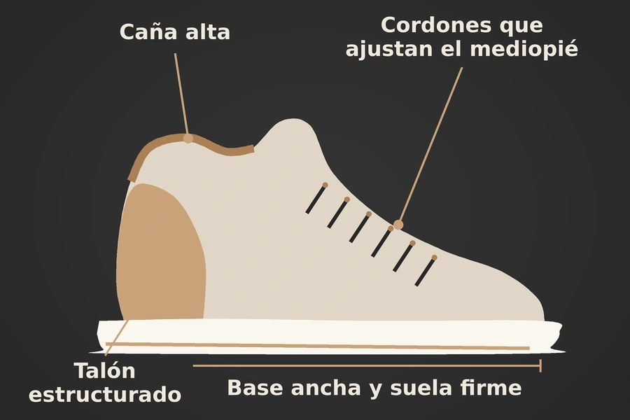
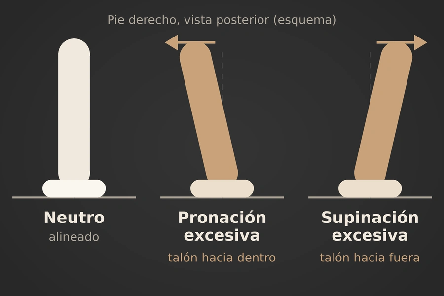
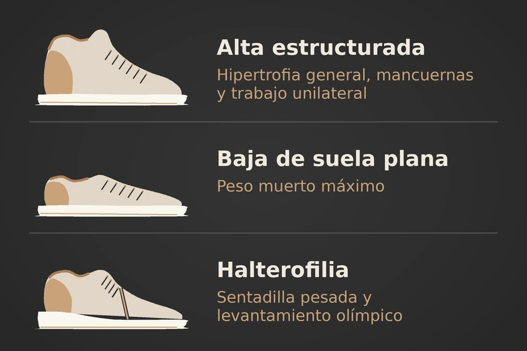

Zapatillas altas y entrenamiento de hipertrofia
En el entrenamiento de hipertrofia, las zapatillas altas estructuradas —como algunos modelos de básquet tipo Jordan, con talón firme, base relativamente ancha y caña acolchada— pueden ser una alternativa válida para entrenar.
Su mayor aporte no es “inmovilizar” el tobillo, sino añadir contención lateral y reducir movimientos extremos mientras el pie conserva la movilidad necesaria para estabilizarse bajo carga.


El pie debe moverse, no colapsar
El pie necesita pronar y supinar. Durante el apoyo, una pronación leve permite que el pie se adapte al suelo y distribuya la carga; posteriormente, la supinación ayuda a convertirlo en una estructura más firme. El objetivo biomecánico no es eliminar esos movimientos, sino evitar que sean excesivos, rápidos o mal controlados.
En ejercicios de hipertrofia como sentadilla, zancadas, prensa unilateral, step-up o ejercicios de pie con mancuernas, existe una fuerza importante que viaja desde el suelo hacia el tobillo, rodilla, cadera y tronco. Si el arco del pie cae demasiado, el talón se desvía hacia dentro y la rodilla también se desplaza hacia dentro, aumenta la demanda sobre músculos, tendones y ligamentos que deben controlar esa cadena de movimiento. El pie plano flexible, por ejemplo, se define por la disminución del arco longitudinal medial durante la carga.
Una zapatilla alta bien construida puede ayudar a poner un límite a ese movimiento lateral excesivo. No debe impedir que el pie haga pequeños ajustes, pero sí puede reducir el riesgo de que el tobillo llegue con rapidez a una posición extrema de inversión o eversión.
Contención para el tobillo
El beneficio potencial de una zapatilla alta no viene solamente de cubrir el tobillo. Depende de que tenga una caña firme, cordones que ajusten el mediopié, un contrafuerte sólido alrededor del talón y una suela que no se deforme demasiado al recibir carga.
La evidencia biomecánica apoya que una caña alta estructurada puede reducir la inversión brusca del retropié, mecanismo relacionado con muchos esguinces laterales de tobillo. En un experimento donde se simuló una inversión repentina de 30 grados, los modelos altos redujeron el pico de inversión entre 7,56 % y 19,61 %, y redujeron también la velocidad máxima de ese movimiento respecto a modelos bajos construidos de manera equivalente.
Otro estudio experimental halló que las zapatillas altas redujeron la inversión del tobillo en aproximadamente 4,5 grados y disminuyeron la velocidad máxima de inversión en comparación con zapatillas bajas. Esto importa porque los ligamentos laterales, en especial el ligamento talofibular anterior, suelen lesionarse cuando la inversión ocurre de forma rápida y supera la capacidad de respuesta muscular.
Utilidad en hipertrofia
En hipertrofia se trabaja con series repetidas y frecuentemente cerca de la fatiga. A medida que se acumulan repeticiones, puede disminuir la calidad del control motor: el arco puede perder firmeza, el talón puede caer hacia dentro o hacia fuera y la rodilla puede desviarse. En este contexto, una zapatilla alta estructurada puede ofrecer una “barrera” adicional frente a movimientos laterales excesivos.
Esto es especialmente relevante en ejercicios donde el tobillo debe estabilizar peso mientras el cuerpo se desplaza:
- Sentadillas con mancuerna o barra a intensidad moderada.
- Zancadas hacia delante, hacia atrás o caminando.
- Bulgarian split squats.
- Step-ups.
- Prensa unilateral.
- Ejercicios de hombro de pie con carga.
- Movimientos funcionales con cambios de posición.
Las zapatillas altas también pueden ser una opción práctica para personas que vienen de esguinces previos, siempre que ya no estén en una fase aguda de lesión y que el retorno a la carga se haga con orientación profesional. La caña alta puede ofrecer seguridad percibida y limitar algunos movimientos extremos, pero no reemplaza un programa de equilibrio, fortalecimiento de peroneos, sóleo, tibial posterior, músculos del pie y glúteos.
Una protección con límites
Defender las zapatillas altas no significa afirmar que sean superiores para toda persona o ejercicio. Su función debe entenderse como apoyo mecánico, no como cura ni garantía de que no habrá lesión.
Un estudio de aterrizajes sobre superficies inclinadas no encontró diferencias claras entre zapatillas altas y bajas en el ángulo máximo de inversión después del contacto. Además, observó menor y más tardía activación anticipada de músculos que ayudan a controlar el tobillo en algunos escenarios con zapatillas altas.
Una persona no debe depender de la zapatilla para “sostener” su cuerpo. Si no existe control activo del arco, fuerza de pantorrilla, estabilidad de tobillo y control de rodilla, la mejor zapatilla no evitará que la técnica se deteriore bajo una carga demasiado alta.
Cómo elegirlas bien
No todas las zapatillas tipo Jordan son iguales. Para hipertrofia, conviene elegir un modelo alto con buena estabilidad y comprobar cómo responde al cargar.
Base amplia
El pie debe sentirse apoyado, no elevado sobre una plataforma estrecha.
Suela relativamente firme
Debe resistir la compresión; una cámara de aire muy blanda o espuma alta puede sentirse inestable en sentadillas pesadas.
Talón estructurado
Debe abrazar el retropié sin permitir demasiado deslizamiento.
Ajuste en el mediopié
Los cordones deben fijar el pie sin producir adormecimiento.
Espacio anterior
Los dedos necesitan espacio para apoyar y ayudar a estabilizar el arco.
Tracción adecuada
Importante para zancadas, peso libre y desplazamientos cortos.
Dónde encajan mejor
Las zapatillas altas estructuradas son más defendibles para hipertrofia general, trabajo con mancuernas, máquinas, ejercicios unilaterales y sesiones de tren inferior de intensidad moderada. Permiten conservar cierto movimiento natural del pie y, a la vez, pueden aportar contención lateral frente a la inversión brusca.
Para peso muerto máximo, una zapatilla baja de suela plana y muy firme suele ser más específica, ya que reduce la altura entre el pie y el suelo.
Para sentadilla pesada o levantamiento olímpico, la zapatilla de halterofilia continúa siendo la opción más especializada por su suela rígida y talón elevado, que puede ofrecer una base más predecible.

Lo más importante
Las zapatillas altas estructuradas no son un accesorio de moda sin utilidad. Bien elegidas, pueden ser una herramienta útil para hipertrofia porque conservan la movilidad funcional del pie mientras limitan movimientos laterales extremos del tobillo. Su papel es acompañar la estabilidad natural del cuerpo, no sustituirla.
Usarlas tiene más sentido cuando se busca entrenar con seguridad en ejercicios de fuerza moderada, unilaterales o con fatiga acumulada, especialmente si hay antecedentes de torceduras de tobillo. La protección más completa, sin embargo, sigue siendo la combinación de calzado estable, técnica consistente, progresión de carga y musculatura fuerte.
Fuentes consultadas
- PMC12775274 – Pie plano flexible y arco longitudinal medial
- Springer – Calzado de caña alta e inversión brusca del retropié
- PubMed 16558606 – Zapatillas altas y bajas: inversión del tobillo
- PubMed 24548559 – Aterrizajes en superficie inclinada con calzado alto y bajo
- Taylor & Francis – Calzado para levantamiento de pesas
Conoce todo lo que tratamos en nuestra página de podología o lee más en el Blog de BeautyPod.